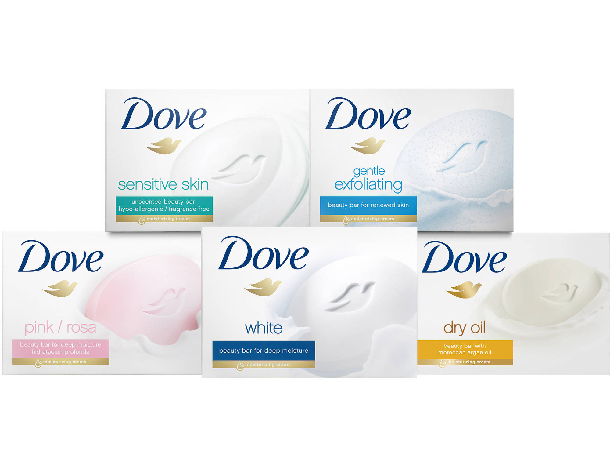

홈 > 브랜드 매거진 > 도브
도브
도브(Dove)는 유니레버가 1957년 출시한 비누·바디케어 퍼스널케어 브랜드이다.
산업 분야 뷰티·퍼스널케어 · 공개 등급 편집 검수 · 브랜드 평가 4.7 ★


한눈에 보는 브랜드
도브는 1957년 미국에서 리버 브라더스(현 유니레버)가 선보인 뷰티·퍼스널케어 브랜드다. 1952년 확보한 순한 약산성 세정바 특허를 바탕으로, 일반 비누와 달리 4분의 1만큼의 모이스처라이징 크림을 담아 피부 건조를 줄인 보습 비누로 출발했다.
두 번의 큰 전환점이 브랜드를 키웠다. 1986년 미국 비누 판매 1위에 오른 대중화기, 그리고 2004년 정형화된 미의 기준에 맞선 리얼 뷰티(Real Beauty) 캠페인이다.
현재 150여 개국에서 판매되며 유니레버의 대표 파워 브랜드로, 2023년 연 60억 유로대 매출을 기록했다.
브랜드 관점
도브의 경쟁 구도는 안티에이징을 앞세운 P&G의 올레이, 1911년 독일에서 출발한 니베아와의 삼파전이다. 올레이가 노년층과 전통적 미 관념, 니베아가 광범위한 남성 라인으로 강점을 가진 반면, 도브는 '리얼 뷰티'를 축으로 한 자기수용과 순한 케어로 차별화한다.
전략의 핵심은 2004년 리얼 뷰티 캠페인이다. 10개국 18~64세 여성 3,200명 조사에서 단 4%만이 스스로를 아름답다고 답한 결과를 근거로, 전문 모델 대신 다양한 인종·연령·체형의 일반 여성을 내세워 다양성과 자기긍정을 마케팅 자산으로 삼았다.
같은 해 출범한 셀프 에스팀 프로젝트로 메시지를 사회적 활동으로 확장했다. 2024년에는 캠페인 20주년을 맞아 '더 코드(The Code)' 캠페인을 통해 여성 이미지를 AI로 생성·왜곡하지 않겠다고 선언하며, 생성형 AI가 만드는 획일적 미의 기준 문제를 정면으로 다뤘다.
한국에서도 '뷰티에 날개를' 같은 슬로건으로 본연의 아름다움에 대한 자신감 메시지를 전개해왔다.
시작과 성장
출발은 전후 미국 시장이었다. 유니레버는 1952년 프랑스에서 순한 약산성 세정바 특허를 확보했고, 단순 비누가 아니라 보습 성분을 더해 쓸수록 피부가 부드러워지도록 설계했다.
1957년 미국에 출시된 도브 뷰티바는 '4분의 1 모이스처라이징 크림'을 내세워 일반 비누의 건조함과 비누때 문제를 줄인다고 약속했다. 첫 번째 전환점은 1979년 재출시로, 피부과 의사가 다른 비누보다 자극이 적다고 확인했다는 의학적 마케팅을 펼쳐 1986년 미국 비누 판매 1위에 올랐다.
두 번째 전환점은 2004년 리얼 뷰티 캠페인으로, 제품을 넘어 자기긍정과 다양성의 가치를 표방하는 브랜드로 도약했다. 국제 확장도 단계적이었다.
1989년 이탈리아를 시작으로 유럽에 진출했고, 1991년부터 1994년 사이 브라질·영국·인도·중국 등 55개 신규 국가로 빠르게 넓혀갔다.
브랜드 아이덴티티
도브의 가치관은 리얼 뷰티와 자기수용에 있다. 정형화된 완벽함이 아니라 서로 다른 체형·연령·인종 속에 진정한 아름다움이 존재한다는 관점을 일관되게 내세운다.
시각 정체성은 브랜드명과 맞닿은 비둘기(Dove) 심벌과 차분한 블루 톤으로, 순함과 신뢰의 인상을 전한다. 핵심 타깃은 여성이며, 남성·아동·베이비 라인으로도 확장돼 있다.
브랜드 보이스는 불안을 자극하기보다 자신감과 격려를 건네는 따뜻하고 공감적인 어조를 유지한다.
제품과 서비스
제품군은 비누(뷰티바), 바디워시, 데오드란트, 헤어케어로 폭넓게 구성된다. 시그니처는 '4분의 1 모이스처라이징 크림'을 담은 오리지널 뷰티바이며, 바디워시에서는 2024년 다수 어워드를 받은 세럼+ 라인이 대표적이다.
가격대는 대중적 매스 시장에 맞춰져 미국 기준 신규 세럼+ 오일 바디워시 권장가가 12.99달러 수준이다. 유통은 대형마트·식품·드러그스토어 등 대중 채널과 온라인을 폭넓게 활용한다.
현재 상태
모회사는 유니레버(Unilever)이며 본사는 영국 런던에 있다. 브랜드 매출은 2023년 기준 연 60억 유로대를 기록했고, 2024년에도 유니레버 퍼스널케어 성장을 이끄는 파워 브랜드로 미국 데오드란트 시장 1위를 차지했다.
브랜드 가치는 2022년 약 54억 달러로 집계됐다. 그 외 세부 재무 지표는 미공개.
타임라인
BI/CI 변천사
함께 읽을 브랜드
 뷰티·퍼스널케어 · 편집 검수니베아
뷰티·퍼스널케어 · 편집 검수니베아니베아(NIVEA)는 1911년 독일 바이어스도르프(Beiersdorf)가 출시한 글로벌 스킨케어 브랜드다. 세계 최초의 안정적인 유중수(油中水) 유화 크림을 선보이...
 뷰티·퍼스널케어 · 매거진 완성더바디샵
뷰티·퍼스널케어 · 매거진 완성더바디샵더바디샵은 화장품을 윤리적 소비와 사회적 메시지를 담는 매개로 확장한 브랜드다. 제품의 효능만큼이나 동물실험 반대, 공정 거래, 환경 의식 같은 태도가 브랜드 선택의...
 뷰티·퍼스널케어 · 자료 기반달바
뷰티·퍼스널케어 · 자료 기반달바달바는 2016년 비모뉴먼트라는 이름으로 출발한 프리미엄 비건 스킨케어 브랜드다. 이탈리아 피에몬테 알바의 화이트 트러플을 핵심 성분으로 내세워 '이탈리안 뷰티'를...
 뷰티·퍼스널케어 · 자료 기반라운드랩
뷰티·퍼스널케어 · 자료 기반라운드랩라운드랩(ROUND LAB)은 서린컴퍼니가 2017년 선보인 대한민국의 저자극 스킨케어 브랜드다. '1025 독도 토너' 등 순한 기초 라인으로 알려진 클린 뷰티 브...
 뷰티·퍼스널케어 · 매거진 완성러쉬
뷰티·퍼스널케어 · 매거진 완성러쉬러쉬는 영국의 뷰티·퍼스널케어 브랜드로, 성분, 사용감, 패키지, 이미지 언어가 구매 판단에 직접 연결되는 영역입니다.
키엘(Kiehl's)은 1851년 미국 뉴욕에서 약방으로 출발한 스킨케어 브랜드다. 옛 약제상(apothecary) 헤리티지를 바탕으로 한 미니멀한 제품으로 알려졌으...
 뷰티·퍼스널케어 · 자료 기반설화수
뷰티·퍼스널케어 · 자료 기반설화수설화수(Sulwhasoo)는 아모레퍼시픽이 1997년 론칭한 대한민국의 한방 럭셔리 스킨케어 브랜드다. 한방 원료와 프리미엄 포지셔닝으로 아모레퍼시픽을 대표하는 럭셔...
 뷰티·퍼스널케어 · 자료 기반아누아
뷰티·퍼스널케어 · 자료 기반아누아아누아(Anua)는 더파운더즈가 전개하는 대한민국의 저자극 스킨케어 브랜드다. 어성초를 핵심 성분으로 한 진정 토너로 미국·일본 등에서 인기를 얻은 K-뷰티 브랜드다...